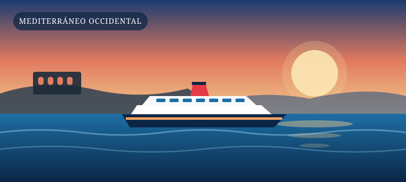
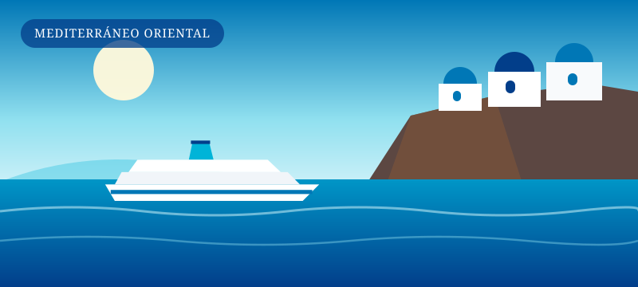
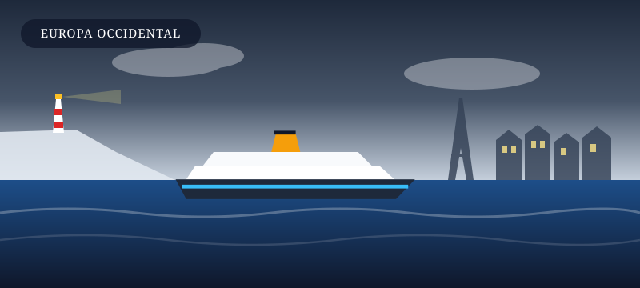

Tres grandes travesías por mar a través del Mediterráneo Occidental, Estambul e Islas Griegas y Europa Occidental.
Mostrando 3 entradas de cruceros.
Ruta 01 · 7 días / 6 noches
Crucero por el Mediterráneo Occidental: desde Barcelona a Tolon pasando por Roma
Publicado el · Puerto base: Barcelona (BCN)

Travesía circular con salida y regreso en el puerto de Barcelona recorriendo España, Italia y Francia.
El Mediterráneo Occidental es el gran clásico de los viajes en crucero: combina ciudades monumentales, historia romana, puertos históricos y la elegancia de la Costa Azul en una sola semana de navegación.
Zarpamos desde Barcelona (BCN) al caer la tarde para amanecer al día siguiente frente a la catedral gótica de Palma de Mallorca.
Tras cruzar el mar Tirreno hacia Sicilia, descubrimos el bullicio histórico de Palermo antes de atracar en Civitavecchia, la puerta marítima para recorrer Roma, el Coliseo y el Vaticano.
El tramo final nos lleva al puerto ligur de Génova y a Toulon, escala ideal para acercarse al glamour de Mónaco y Montecarlo antes de poner rumbo de regreso a Barcelona.
Itinerario y escalas
Día
Puerto de escala
País
Imprescindible en la visita
Día 1
Barcelona (BCN) — Salida
España
Embarque en el Moll Adossat y vistas de Montjuïc al zarpar.
Día 2
Palma de Mallorca
España
Catedral de Santa María (La Seu), casco antiguo y Castillo de Bellver.
Día 3
Palermo
Italia
Catedral de Palermo, Quattro Canti y gastronomía siciliana.
Día 4
Civitavecchia (para ver Roma)
Italia
Excursión a Roma: Coliseo, Fontana di Trevi y Plaza de San Pedro.
Día 5
Génova
Italia
Via Garibaldi, Puerto Antiguo y el centro histórico medieval.
Día 6
Toulon (para ver Mónaco)
Francia / Mónaco
Excursión por la Costa Azul hasta el Palacio del Príncipe y Montecarlo.
Día 7
Barcelona (BCN) — Regreso
España
Desembarque temprano en el puerto de Barcelona.
Tips para esta ruta
Reserva el traslado a Roma desde Civitavecchia con antelación para aprovechar al máximo las horas en la ciudad.
En Toulon, planifica bien el horario de regreso desde Mónaco teniendo en cuenta el tráfico de la Costa Azul.
Sube a cubierta superior durante la salida de Barcelona y la llegada a Palma para disfrutar de las mejores panorámicas.
Ruta 02 · 7 días / 6 noches
Crucero por el Mediterráneo Oriental: Atenas, Estambul e Islas Griegas
Publicado el · Puerto base: Atenas (El Pireo)

Navegación entre civilizaciones clásicas: de la Acrópolis de Atenas al Bósforo y las islas Cícladas.
Pocas rutas marítimas ofrecen un contraste tan hipnótico como el Mediterráneo Oriental: mitología griega, bazares otomanos, fortalezas medievales y pueblos blancos suspendidos sobre acantilados volcánicos.
La aventura comienza en Atenas, desde donde navegamos hacia el estrecho de los Dardanelos para recalar en la monumental Estambul, puente entre Europa y Asia.
Al descender de nuevo por el mar Egeo, caminamos por la ciudad amurallada de Rodas, nos perdemos entre los molinos de viento de Míkonos y contemplamos la caldera volcánica de Santorini.
Antes de completar el círculo de vuelta a Atenas, hacemos escala en Creta, cuna de la civilización minoica.
Itinerario y escalas
Día
Puerto de escala
País
Imprescindible en la visita
Día 1
Atenas (El Pireo) — Salida
Grecia
Acrópolis, Partenón y paseo por el barrio histórico de Plaka.
Día 2
Estambul
Turquía
Santa Sofía, Mezquita Azul, Palacio de Topkapi y Gran Bazar.
Día 3
Rodas
Grecia
Ciudad Medieval de los Caballeros y Palacio del Gran Maestre.
Día 4
Míkonos
Grecia
Pequeña Venecia, molinos de Kato Mili y callejuelas encaladas.
Día 5
Santorini
Grecia
Subida en teleférico a Fira, cúpulas azules de Oia y vistas a la caldera.
Día 6
Creta (Heraclión)
Grecia
Palacio de Cnosos, puerto veneciano y gastronomía cretense.
Día 7
Atenas (El Pireo) — Regreso
Grecia
Llegada matinal y cierre de la travesía por el mar Egeo.
Tips para esta ruta
En Santorini, el desembarque suele realizarse en lanchas: pide turno temprano para subir a Fira sin colas.
Lleva calzado cómodo y protección solar, ya que las visitas arqueológicas en Atenas, Rodas y Creta tienen poca sombra.
No te pierdas la entrada al puerto de Estambul desde cubierta: la silueta de los minaretes al amanecer es inolvidable.
Ruta 03 · 9 días / 8 noches
Crucero por Europa Occidental: desde Canarias a Ámsterdam pasando por Francia y UK
Publicado el · Travesía lineal: Tenerife → Ámsterdam

Gran ruta atlántica conectando España, Portugal, Inglaterra, Francia y Países Bajos.
A diferencia de los itinerarios circulares, este viaje hacia el norte nos permite ver cómo cambia el paisaje, la luz y la arquitectura desde la eterna primavera canaria hasta el mar del Norte.
Partimos desde Tenerife rumbo a la desembocadura del Tajo para atracar en Lisboa, pasando bajo el puente 25 de Abril.
Tras disfrutar de la ría y la gastronomía gallega en Vigo, cruzamos el golfo de Vizcaya hacia el Canal de la Mancha.
Allí nos esperan los acantilados blancos de Dover, puerta de entrada para visitar Londres, y el puerto normando de Le Havre, desde donde podemos escaparnos a París.
El broche final llega en Ámsterdam, entre canales, puentes y bicicletas.
Itinerario y escalas
Día
Puerto de escala
País
Imprescindible en la visita
Día 1
Tenerife (Santa Cruz) — Salida
España
Auditorio de Tenerife, Parque Nacional del Teide y embarque atlántico.
Día 3
Lisboa
Portugal
Torre de Belém, barrio de Alfama, tranvía 28 y pasteles de nata.
Día 4
Vigo
España
Casco Vello, Monte do Castro, ría de Vigo o escapada a Santiago.
Día 6
Dover (para ver Londres)
Reino Unido
Acantilados Blancos y excursión a Londres (Westminster, Big Ben y Támesis).
Día 7
Le Havre (para ver París)
Francia
Arquitectura moderna de Le Havre o jornada completa en París y Torre Eiffel.
Día 9
Ámsterdam — Llegada final
Países Bajos
Anillo de canales, Rijksmuseum, Barrio de Jordaan y desembarque.
Consejos clave para esta ruta
Prepara la maleta por capas: saldrás con clima suave en Tenerife y terminarás con brisa fresca en el Canal de la Mancha y Ámsterdam.
Comprueba la documentación de entrada vigente para Reino Unido antes de la escala en Dover.
Tanto Londres desde Dover como París desde Le Havre implican trayectos largos: prioriza excursiones organizadas con regreso garantizado al barco.
Comparte tu experiencia a bordo
¿Has realizado alguno de estos itinerarios o estás planeando tu próximo embarque? Deja tu comentario en el cuaderno de bitácora.
Comentarios recientes (2)
Carlos R.Mediterráneo Occidental
Hicimos exactamente esta ruta saliendo desde Barcelona y la escala en Civitavecchia para ver Roma fue espectacular. Recomiendo madrugar muchísimo ese día.
Elena V.Mediterráneo Oriental
El atardecer saliendo de Santorini y la mañana en Estambul hacen que este crucero sea inolvidable. ¡Muy útiles las tablas de escalas!